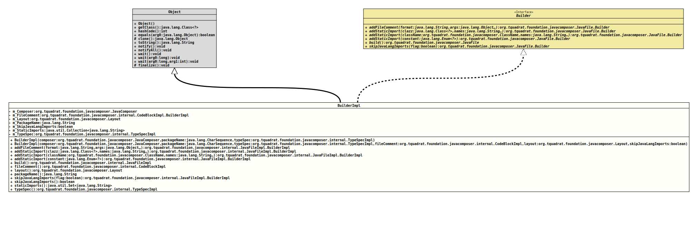

Class JavaFileImpl.BuilderImpl
java.lang.Object
org.tquadrat.foundation.javacomposer.internal.JavaFileImpl.BuilderImpl
- All Implemented Interfaces:
JavaFile.Builder
- Enclosing class:
JavaFileImpl
@ClassVersion(sourceVersion="$Id: JavaFileImpl.java 1105 2024-02-28 12:58:46Z tquadrat $")
@API(status=INTERNAL,
since="0.0.5")
public static final class JavaFileImpl.BuilderImpl
extends Object
implements JavaFile.Builder
The builder for an instance of
JavaFileImpl
as an implementation of
JavaFile.Builder.- Author:
- Square,Inc.
- Modified by:
- Thomas Thrien (thomas.thrien@tquadrat.org)
- Version:
- $Id: JavaFileImpl.java 1105 2024-02-28 12:58:46Z tquadrat $
- Since:
- 0.0.5
- UML Diagram
-

UML Diagram for "org.tquadrat.foundation.javacomposer.internal.JavaFileImpl.BuilderImpl"
{kind=link}
-
Field Summary
FieldsModifier and TypeFieldDescriptionprivate final JavaComposerThe reference to the factory.private final CodeBlockImpl.BuilderImplThe file comment.private LayoutThe layout for the output ofJavaFile.private final StringThe name of the package for the class in theJavaFileImpl.private booleanFlag that determines whether to skip the imports for classes from the packagejava.lang.private final Collection<String> The static imports.private final TypeSpecImplTheTypeSpecImplfor the class in theJavaFileImpl. -
Constructor Summary
ConstructorsConstructorDescriptionBuilderImpl(JavaComposer composer, CharSequence packageName, TypeSpecImpl typeSpec) Creates a newBuilderImplinstance.BuilderImpl(JavaComposer composer, CharSequence packageName, TypeSpecImpl typeSpec, CodeBlockImpl fileComment, Layout layout, boolean skipJavaLangImports) Creates a newBuilderImplinstance. -
Method Summary
Modifier and TypeMethodDescriptionfinal JavaFileImpl.BuilderImpladdFileComment(String format, Object... args) Adds text to the file comment.final JavaFileImpl.BuilderImpladdStaticImport(Class<?> clazz, String... names) Adds a static import.final JavaFileImpl.BuilderImpladdStaticImport(Enum<?> constant) Adds a static import for the givenenumvalue.final JavaFileImpl.BuilderImpladdStaticImport(ClassName className, String... names) Adds a static import.final JavaFileImplbuild()Builds an instance ofJavaFilefrom this builder.final CodeBlockImplReturns the file comment.final Layoutlayout()Returns the layout for the output of theJavaFile.final StringReturns the package name.final booleanReturns the flag that rules whether imports for classes from the packagejava.langwill be omitted.final JavaFileImpl.BuilderImplskipJavaLangImports(boolean flag) Returns the static imports.final TypeSpecImpltypeSpec()Returns the specification of the type for the Java file.
-
Field Details
-
m_Composer
The reference to the factory. -
m_FileComment
The file comment. -
m_Layout
The layout for the output ofJavaFile. -
m_PackageName
The name of the package for the class in theJavaFileImpl. -
m_SkipJavaLangImports
Flag that determines whether to skip the imports for classes from the packagejava.lang. -
m_StaticImports
The static imports. -
m_TypeSpec
TheTypeSpecImplfor the class in theJavaFileImpl.
-
-
Constructor Details
-
BuilderImpl
Creates a newBuilderImplinstance. -
BuilderImpl
public BuilderImpl(JavaComposer composer, CharSequence packageName, TypeSpecImpl typeSpec, CodeBlockImpl fileComment, Layout layout, boolean skipJavaLangImports) Creates a newBuilderImplinstance.- Parameters:
composer- The reference to the factory that created this builder instance.packageName- The name of the package for the class in theJavaFileImpl.typeSpec- TheTypeSpecImplinstance for the class in theJavaFileImpl.fileComment- The already existing file comments.layout- The layout for the output ofJavaFile.skipJavaLangImports-truemeans that the imports for classes from the packagejava.langare skipped,falsemeans that the imports are added explicitly.
-
-
Method Details
-
addFileComment
Adds text to the file comment.- Specified by:
addFileCommentin interfaceJavaFile.Builder- Parameters:
format- The format.args- The arguments.- Returns:
- This
Builderinstance.
-
addStaticImport
Adds a static import.- Specified by:
addStaticImportin interfaceJavaFile.Builder- Parameters:
clazz- The class.names- The names of the elements from the given class that are to be imported.- Returns:
- This
Builderinstance.
-
addStaticImport
Adds a static import.- Specified by:
addStaticImportin interfaceJavaFile.Builder- Parameters:
className- The class.names- The names of the elements from the given class that are to be imported.- Returns:
- This
Builderinstance.
-
addStaticImport
Adds a static import for the givenenumvalue.- Specified by:
addStaticImportin interfaceJavaFile.Builder- Parameters:
constant- Theenumvalue.- Returns:
- This
Builderinstance.
-
build
Builds an instance ofJavaFilefrom this builder.- Specified by:
buildin interfaceJavaFile.Builder- Returns:
- The
JavaFileinstance.
-
fileComment
Returns the file comment.- Returns:
- The file comment.
-
layout
Returns the layout for the output of theJavaFile.- Returns:
- The layout.
-
packageName
Returns the package name.- Returns:
- The package name.
-
skipJavaLangImports
Call this to omit imports for classes from the package
java.lang, such asStringorMath.By default, JavaComposer explicitly imports types in
java.langto defend against naming conflicts. Suppose an (ill-advised) class is namedcom.example.String. Whenjava.langimports are skipped, generated code incom.examplethat referencesjava.lang.Stringwill getcom.example.Stringinstead.- Specified by:
skipJavaLangImportsin interfaceJavaFile.Builder- Parameters:
flag-truemeans that the imports for classes from the packagejava.langare skipped,falsemeans that the imports are added explicitly.- Returns:
- This
Builderinstance.
-
skipJavaLangImports
Returns the flag that rules whether imports for classes from the packagejava.langwill be omitted.- Returns:
truemeans that the imports for classes from the packagejava.langare skipped,falsemeans that the imports are added explicitly.- See Also:
-
staticImports
Returns the static imports.- Returns:
- The static imports.
-
typeSpec
Returns the specification of the type for the Java file.- Returns:
- The type specification.
-